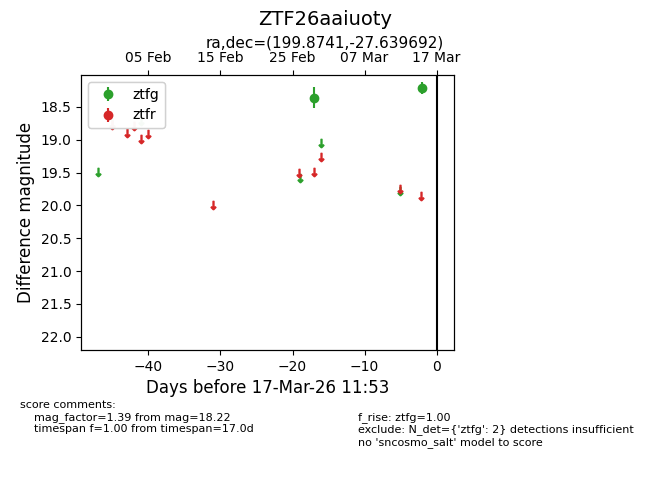
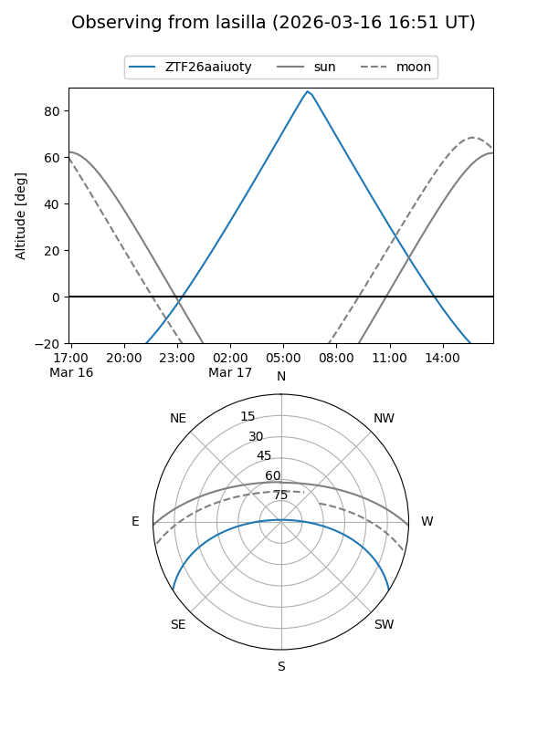
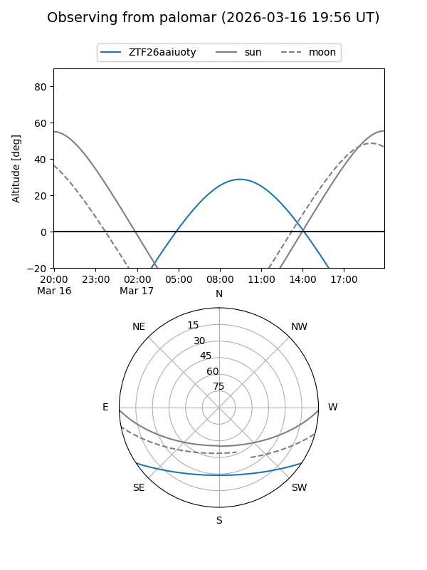

ZTF26aaiuoty
Target ZTF26aaiuoty at 2026-03-17 11:55
Aliases and brokers:
FINK: link
Lasair: link
ALeRCE: link
alt names
ZTF26aaiuoty (ztf,fink_ztf)
Coordinates:
equatorial (ra, dec) = 199.8741,-27.63969
equatorial (HMS+DMS) = 13:19:29.78,-27:38:22.89
galactic (l, b) = (310.5044,+34.81915)
Flags:
Photometry:
last ztfg=18.22
2 ztfg detections
Lightcurve

Visibility


Additional plots